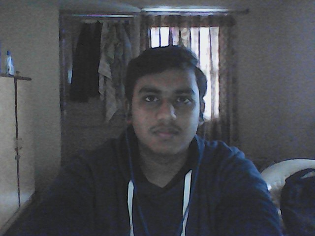

// Training LLMs · Building RL agents · Shipping full-stack products
CS undergrad from Charusat · Built Gujarati GPT-2 & LLaMA2 from scratch · 295+ real users on PromptCraft · seeking ML & SWE internships

I'm a CS undergraduate from Charusat University, Anand, India - building intelligent systems at the intersection of NLP research and full-stack engineering.
My core work is in low-resource NLP - I've designed and trained GPT-2 and LLaMA2 architectures from scratch for Gujarati, built custom SentencePiece tokenizers, and fine-tuned models on IndicSQuAD for generative QA. I also build RL environments and train agents using PPO.
On the engineering side, I ship full-stack products that people use - PromptCraft hit 295+ organic users in 14 months. I've interned as a full-stack developer and am comfortable across the Python/JS/React stack.
Built a 52M-param GPT-2 causal language model from scratch for the Gujarati language. Trained a custom SentencePiece tokenizer with 64K vocab on a 3.4GB corpus.
Fine-tuned the Gujarati GPT-2 base on IndicSQuAD for generative question answering. Used a structured Context / Question / Answer format prompt template.
Designed a compact LLaMA2-architecture LM (6 layers, 512 hidden dim, 64K vocab) trained on 3.4GB of Gujarati text. Implemented custom LR scheduling with gradient norm tracking.
Built a 2D platformer (Pygame) wrapped as a Gymnasium-compatible RL environment. Trained a PPO agent with shaped rewards handling dynamic wind, jetpack physics, and fuel management.
Deployed web tool powered by Google Gemini API generating tailored coding prompts. Built with JS + TailwindCSS - acquired real users organically with zero paid marketing.
Open to internships, research collaborations, and interesting problems. If you're working on something that matters - I'd love to hear about it.
parmarnaman19@gmail.com